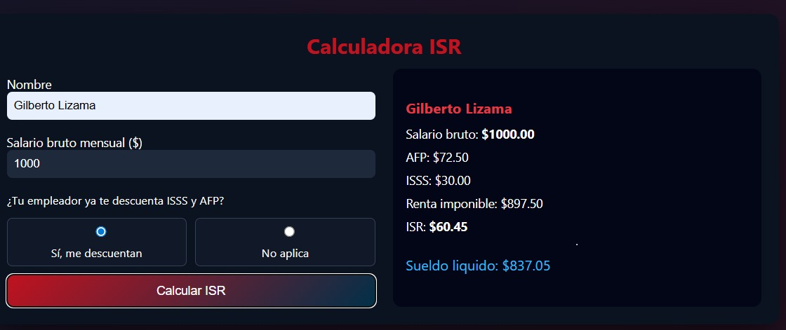

Contabilidad
En el proyecto de Contabilidad, orientado al cálculo de ISR, desempeñé el rol de desarrollador Full Stack. Desarrollé una calculadora de ISR que automatiza los cálculos contables según los ingresos del usuario. Implementé tanto la lógica de negocio como la interfaz interactiva, permitiendo el ingreso de datos y la visualización clara de resultados.

Full Stack
Github
Tecnologías utilizadas
Competencias técnicas
